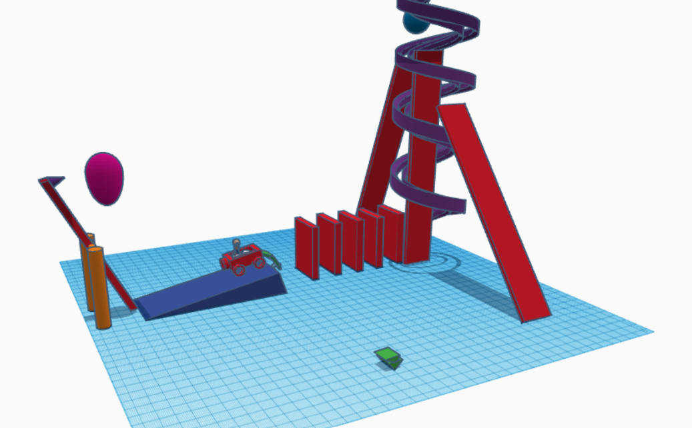
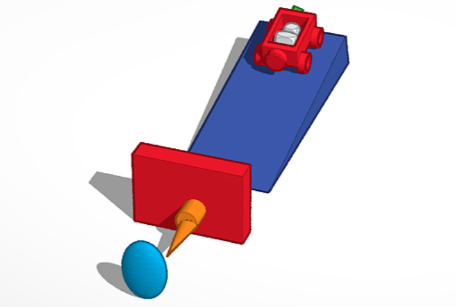
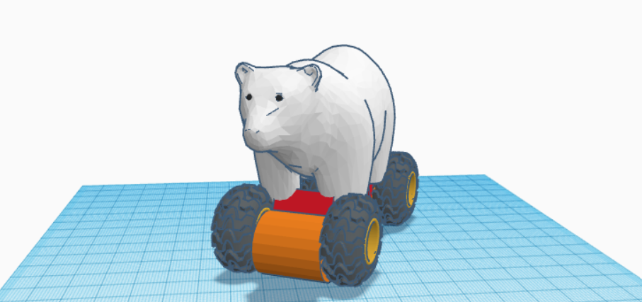

8/19/2022
today i learned how to make a website
8/22/22
today I added my favorite pizza place to the website
8/23/22
today I learned how to add images and change their width and height,I added 2 pictures. I also made a github account.
8/24/22
I dropped $350 on gundam model kits.
8/24/22
I learned about the safty rules for the workshop, I also refreshed and learned new things about java in ap comp.
Right now I'm working on my rube goldberg machine in tinkercad.
Yesterday, we did a chalenge where we tried to make the best home appliance. I lost.

9/8/22
Today the queen died, and We got into our group for the Rube goldberg machine.
9/16/22
for challenge day we made a boat that is meant to float for 5 min.
PDF
9/26/22
we finished and tested our rube goldberg machine, after a few trys we managed to pop the ballon
the first cad is the group cad and the second is my personal cad.

9/30/22
I finished the Prosthetic is made for a polar bear, the Prosthetic makes it really fast

10/7/22
this week we tryed to take apart a laptop but the one we got was wacky